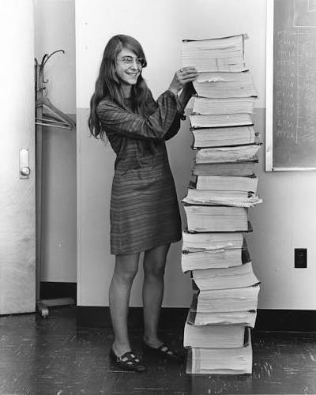

Margaret Heafield Hamilton
Diretora de Software do Programa Apollo (1936 – presente)

Liderança no Projeto Apollo 11
Margaret Hamilton é matemática, cientista da computação e empresária norte-americana. Como diretora da Divisão de Engenharia de Software do Laboratório de Instrumentação do MIT, liderou a equipe que criou o programa de computador embarcado nas missões Apollo da NASA.
Salvando o Pouso na Lua
Minutos antes de o módulo lunar da Apollo 11 pousar na Lua em 1969, os alarmes da espaçonave dispararam devido a uma sobrecarga de dados no radar. O software ultra-confiável desenvolvido por Margaret priorizou automaticamente as tarefas vitais de navegação, ignorando processos secundários. Isso evitou que a missão fosse abortada e garantiu o histórico pouso do homem na Lua.
Criadora de um Conceito Fundamental
Margaret é a responsável por cunhar o próprio termo "Engenharia de Software", lutando para que a disciplina obtivesse o mesmo respeito acadêmico e técnico das engenhiarias tradicionais. Ela também foi pioneira em computação paralela e agendamento por prioridade. Por suas contribuições, recebeu a Medalha Presidencial da Liberdade do presidente Barack Obama em 2016.
"Não havia escolha a não ser ser pioneira. Não existia escola para o que estávamos fazendo."
— Margaret Hamilton